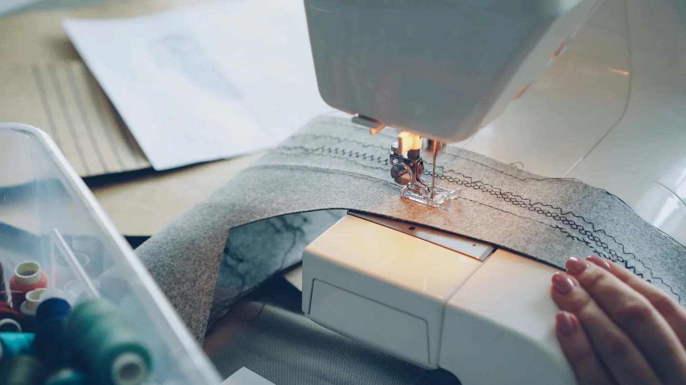

Вещь целиком
Не только сломанную деталь: общий осмотр помогает выбрать способ ремонта.
РЕМОНТ · КЛЮЧИ · БЫТОВЫЕ УСЛУГИ
Ремонт одежды, обуви и ключи рядом с домом
Мастерская бытовых услуг на Белорусской, 5. Опишите задачу мастеру — уточните возможность ремонта, стоимость и срок.

ВЫБРАТЬ НАПРАВЛЕНИЕ
Выберите то, что ближе к вашей задаче.
Для подгонки принесите вещь и обувь, с которой будете её носить. Для ремонта покажите повреждение.
Составить обращение ↗ПАМЯТКА
Не только сломанную деталь: общий осмотр помогает выбрать способ ремонта.
Уточните итоговую стоимость, материалы и дату получения до начала работы.
Проверьте посадку, застёжку или результат ремонта вместе с мастером.
Дом быта / О ПОДХОДЕ
Одинаковая с виду проблема может требовать разного ремонта. Материал, состояние вещи и доступность деталей влияют на результат и стоимость.
ПОЛЕЗНО ПЕРЕД ОБРАЩЕНИЕМ
Для первого разговора полезно показать повреждение крупно и вещь целиком. Не удаляйте сломанные детали до осмотра.
Подготовить запрос ↗ВАШ СЛЕДУЮЩИЙ ШАГ
Несколько деталей помогут точнее обсудить задачу. Полученный текст можно скопировать для сообщения или использовать при звонке.
ТЕКСТ НЕ ОТПРАВЛЯЕТСЯ АВТОМАТИЧЕСКИ
ПЕРЕД ВИЗИТОМ
Можно описать задачу, но окончательная оценка может потребовать осмотра вещи.
Уточните требования к вашему типу ключа и возможность изготовления у мастера.
Перечень работ и наличие материалов необходимо уточнять в мастерской.
КОНТАКТЫ
Часы работы и детали визита уточните перед обращением.